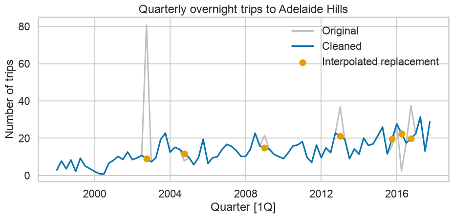

It assumes smooth movement between neighboring observations.
Original and cleaned series

Visual comparison of imputations
Compare decomposition before and after
sns.histplot(clean_fit.resid, kde =True)
Key Takeaways
Main conclusions
Adjust known measurement effects before decomposition.
Use transformations when variation changes with the level.
Additive and multiplicative decompositions imply different units.
Moving averages reveal trend but create endpoint and smoothing trade-offs.
Classical decomposition assumes fixed seasonality and is not robust.
Seasonally adjusted data still contain the remainder.
STL allows controllable trend and evolving seasonality.
Robust STL protects components, not the observed outlier itself.
Component plots require careful attention to vertical scales.
Decomposition is a hypothesis-producing visual analysis, not causal proof.
Visual diagnostic protocol
plot the original series;
label units and frequency;
inspect seasonal amplitude against level;
remove known calendar, population, or price effects;
compare plausible transformations;
estimate components;
compare observed, trend, and adjusted series;
inspect remainder over time and by ACF;
test sensitivity to windows and robust fitting;
document choices and limitations.
Exercises
Core Exercises
Consider the GDP information in global_economy. Plot the GDP per capita for each country over time. Which country has the highest GDP per capita? How has this changed over time?
For each of the following series, make a graph of the data. If transforming seems appropriate, do so and describe the effect.
United States GDP from global_economy.
Slaughter of Victorian “Bulls, bullocks and steers” in aus_livestock.
Victorian Electricity Demand from vic_elec.
Gas production from aus_production.
Why is a Box-Cox transformation unhelpful for the canadian_gas data?
For the following series, find an appropriate Box-Cox transformation in order to stabilise the variance. Tobacco from aus_production, Economy class passengers between Melbourne and Sydney from ansett, and Pedestrian counts at Southern Cross Station from pedestrian.
Consider the last five years of the Gas data from aus_production.
gas = aus_production.loc[lambda x: x["unique_id"] =="Gas"].tail(5*4)
Plot the time series. Can you identify seasonal fluctuations and/or a trend-cycle?
Use seasonal_decompose with model=‘multiplicative’ to calculate the trend-cycle and seasonal indices.
Do the results support the graphical interpretation from part a?
Compute and plot the seasonally adjusted data.
Change one observation to be an outlier (e.g., add 300 to one observation), and recompute the seasonally adjusted data. What is the effect of the outlier?
Does it make any difference if the outlier is near the end rather than in the middle of the time series?
This exercise uses the canadian_gas data (monthly Canadian gas production in billions of cubic metres, January 1960 – February 2005).
Plot the data using to look at the effect of the changing seasonality over time.1
Do an STL decomposition of the data using STL().
How does the seasonal shape change over time? [Hint: Try plotting the seasonal component.]
Can you produce a plausible seasonally adjusted series?
References
Core references
Hyndman, R. J., Athanasopoulos, G., Garza, A., Challu, C., & Mergenthaler, M. Forecasting: Principles and Practice, the Pythonic Way, Chapter 3.
Box, G. E. P., & Cox, D. R. (1964). An Analysis of Transformations.
Cleveland, R. B., Cleveland, W. S., McRae, J. E., & Terpenning, I. (1990). STL: A Seasonal-Trend Decomposition Procedure Based on Loess.
Dagum, E. B., & Bianconcini, S. (2016). Seasonal Adjustment Methods and Real Time Trend-Cycle Estimation.
statsmodels documentation: STL and seasonal_decompose.